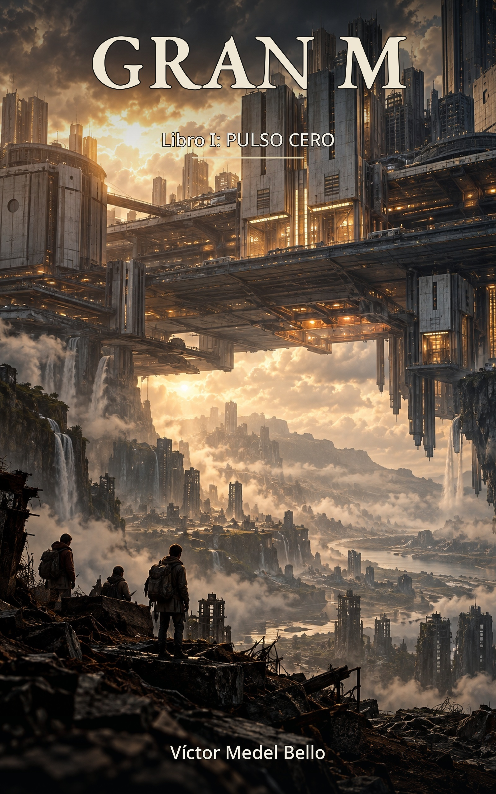

«Si el sistema deja de reconocerte, ¿sigues vivo?»
Sesenta y ocho años después del fin de casi todo, una ciudad suspendida observa una Tierra que empieza a contradecir los registros oficiales.
En una ciudad suspendida sobre una Tierra alterada, Senkai, un joven de diecinueve años, acepta misiones de descenso porque necesita dinero: la cobertura médica de su familia depende de aceptar los trabajos más peligrosos.
Durante sus expediciones a la superficie encuentra lo que no debería existir: señales de vida y archivos que contradicen la versión oficial del mundo. Datos que no encajan, una amenaza biológica que altera las reglas y una pregunta que no deja de crecer: ¿cuánto de lo que le han contado es verdad?
Una novela de ciencia ficción biopunk y distópica sobre la supervivencia, la deuda, la propaganda y el poder de quienes controlan la información.
Sobrevivir también tiene condiciones.
Una Tierra arrasada, una ciudad que flota sobre ella y un relato oficial que se resquebraja. Estos son los ejes que recorren Pulso Cero.
Víctor Medel Bello firma GRAN M, una saga de ciencia ficción biopunk y distópica que arranca con Pulso Cero. Una historia de mundos construidos con cuidado, donde la supervivencia, la propaganda y el control de la información mueven los hilos.
Pulso Cero es solo el comienzo de GRAN M.
Página del autor en Amazon →GRAN M: Libro I — Pulso Cero está disponible en Amazon en los dos formatos. Desciende a la superficie con Senkai.